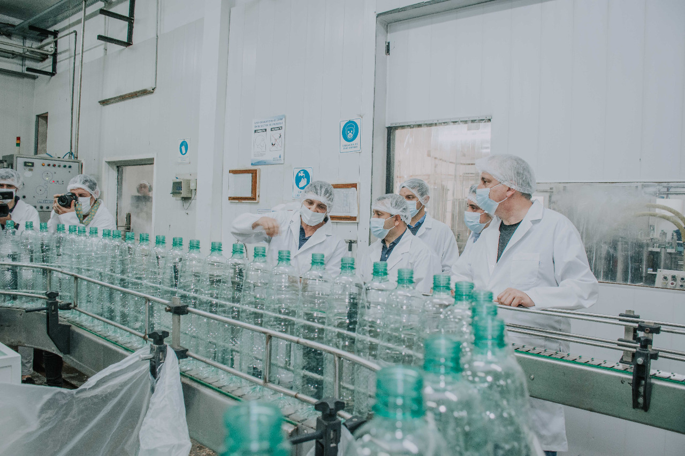

NUESTRA EMPRESA
 -Bienvenidos a Aqua Retorna, una empresa familiar arraigada en la pasión por el agua y el compromiso con el medio ambiente. Desde nuestros inicios, hemos abrazado la visión de ser más que una simple embotelladora: somos guardianes del recurso más vital para la vida.
Nuestro camino inició hace años, impulsado por la convicción de hacer algo significativo por nuestro entorno. Con dedicación y esfuerzo, transformamos esta idea en una realidad palpable: Aqua Retorna. Inspirados por la idea de preservar la pureza del agua y minimizar el impacto ambiental, nos comprometimos a ofrecer una alternativa sostenible a la manera en que se consume y se distribuye este invaluable recurso.
Cada paso en nuestra trayectoria ha estado marcado por valores de humildad, cuidado y respeto por nuestro entorno. Nos enorgullecemos de haber construido una empresa desde la raíz, cultivando relaciones auténticas con nuestra comunidad y colaboradores. Nuestra historia se nutre de momentos compartidos, desafíos superados y aprendizajes constantes que nos han permitido evolucionar y mejorar.
En Aqua Retorna, nuestros objetivos van más allá de simplemente proporcionar agua embotellada. Buscamos marcar la diferencia promoviendo un ciclo sostenible: desde la fuente hasta cada botella retornable. Nos esforzamos por fomentar prácticas responsables, reducir residuos y promover un consumo consciente. Además, nos comprometemos a apoyar iniciativas locales que promuevan la conservación del agua y la protección del medio ambiente.
Nuestro sueño es hacer de Aqua Retorna un motor de cambio positivo, donde cada botella representa un paso hacia un futuro más limpio y sostenible para las generaciones venideras. Agradecemos a cada persona que se une a esta misión y nos impulsa a seguir avanzando hacia un mundo donde el agua y la naturaleza sean preservadas para todos.